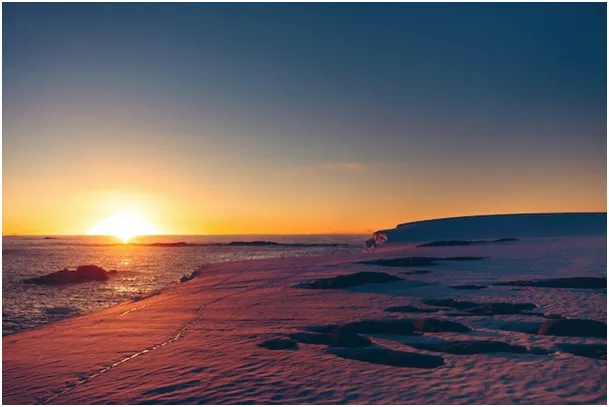
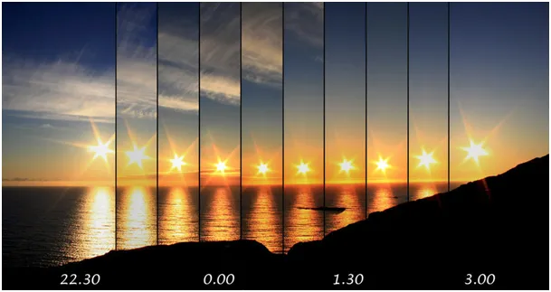
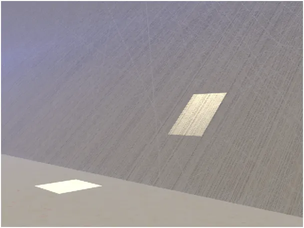
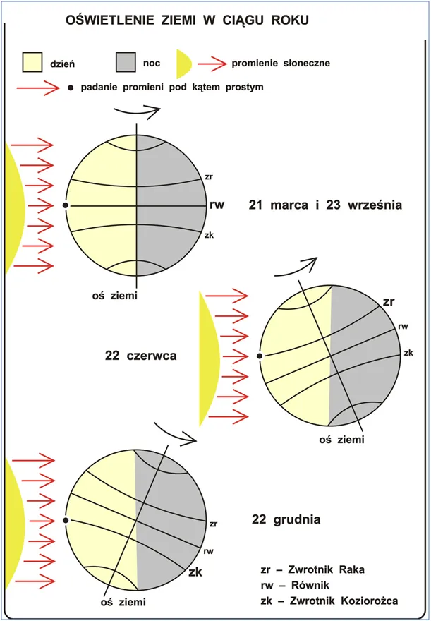

Na północy, gdzie nie spojrzysz jest południe.
Dzień polarny zaczął się kilka dni temu i potrwa pół roku i nie przypomina w niczym naszego dnia. Za kołem podbiegunowym, a na samym biegunie już od wczoraj trwa polarny dzień. Słońce tam wschodzi i zachodzi raz na rok. Po wschodzie w marcu tarcza Słońca snuje się leniwie po widnokręgu przez całą dobę. Na własne oczy możemy wtedy zobaczyć prawdę, że z bieguna północnego, gdzie nie spojrzysz, patrzysz zawsze na południe. Czy spojrzysz w prawo, czy w lewo, czy za siebie, południe jest wszędzie tylko nie tu, gdzie stoisz. W każdym kierunku do bieguna południowego jest tak samo daleko, 20 004 km.

Słońce wykonuje wokół Ziemi pozorny ruch po spirali, my tego nie widzimy, bo nocą znika za horyzontem i rano trudno nam pamiętać, po jakim torze wędrowało wczoraj. Inaczej w Arktyce, tam wschód trwa całymi tygodniami, Słońce leniwie zatacza kręgi wokół nas przez całą dobę i co dnia widzimy, że snuje się ciut wyżej. Pada na ziemię pod tak małym kątem, prawie płasko, zostawiając bardzo długie cienie, przez co w pierwszych dniach arktycznego lata trzeba być na górce, by je widzieć, cienie wzgórz ciągną się kilometrami.

Jest jasno i zimno, bo ostry kąt padania oznacza, że kwadratowa wiązka światła np. o przekroju metra jest rozciągnięta na wiele, wiele metrów kwadratowych, to jest właśnie ten słynny kosinus fi!

Dziś Słońce pada prostopadle na równik i tam wiązka światła o przekroju metra kwadratowego ogrzewa dokładnie 1 metr kwadratowy gruntu. Grafika pokazuje oświetlenie dwoma identycznymi kwadratowymi reflektorami podłogi prostopadle z góry oraz kawałek dekoracji, płyty położonej pod kątem. Taki sam snop światła tworzy prostokąt, wiec ta sama porcja energii musi ogrzewać większą powierzchnię. Zagadka tropików i Arktyki wyjaśniona geometrycznie.

Więcej moich tekstów o Ziemi i Słońcu tu. Proszę wspierać stronę. https://pawelklimczewski.pl/?s=s%C5%82o%C5%84ce
Paweł Klimczewski